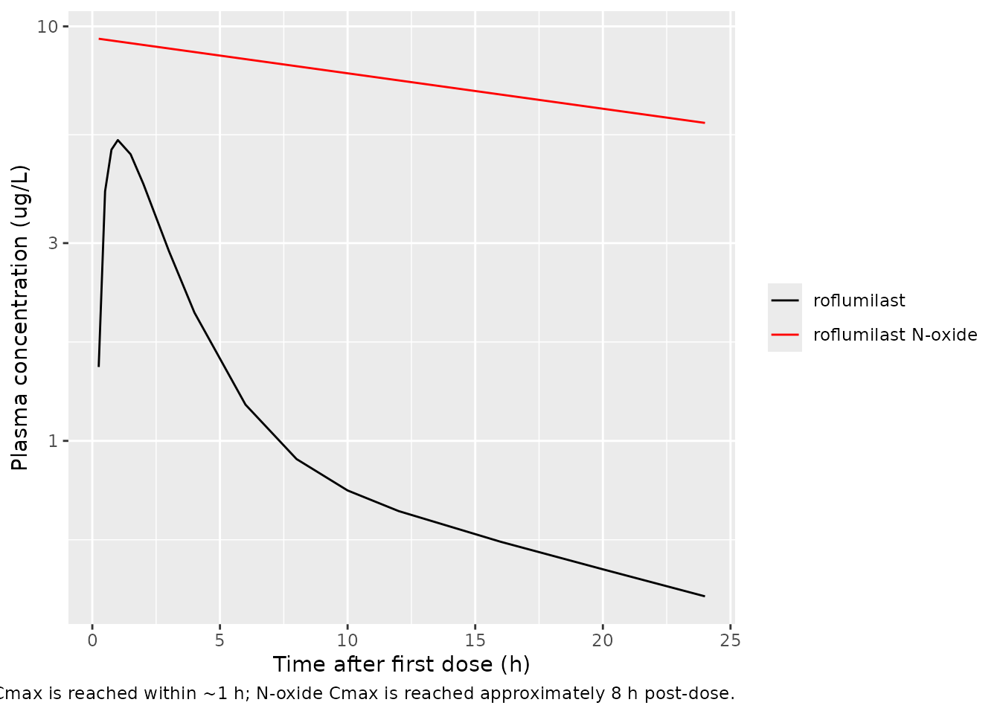
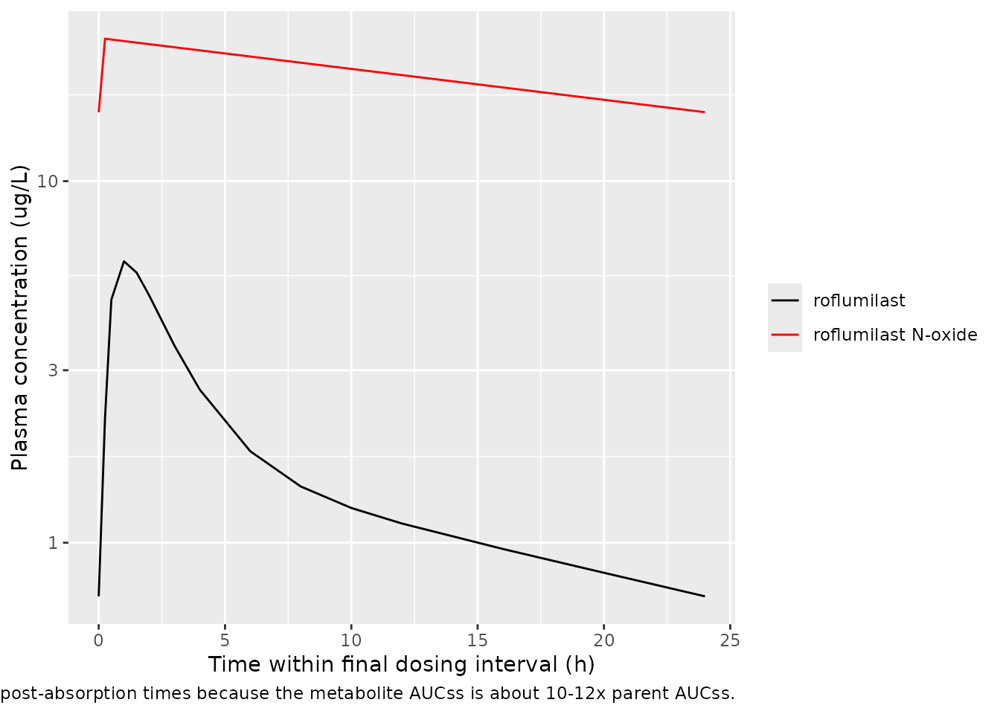

Lahu_2010_roflumilast
Source:vignettes/articles/Lahu_2010_roflumilast.Rmd
Lahu_2010_roflumilast.RmdModel and source
- Citation: Lahu G, Hunnemeyer A, Diletti E, Elmlinger M, Ruth P, Zech K, McCracken N, Facius A. Population pharmacokinetic modelling of roflumilast and roflumilast N-oxide by total phosphodiesterase-4 inhibitory activity and development of a population pharmacodynamic-adverse event model. Clin Pharmacokinet. 2010;49(9):589-606. doi:10.2165/11536600-000000000-00000
- Article: https://doi.org/10.2165/11536600-000000000-00000
The packaged model is Lahu_2010_roflumilast, a joint
parent-metabolite population PK model for oral roflumilast and its
primary active metabolite roflumilast N-oxide. Roflumilast is described
by a two-compartment model with first-order absorption (rate
ka, lag time tlag_parent); roflumilast N-oxide
is described by a one-compartment model with zero-order absorption
(duration d1_noxide, lag time tlag_noxide).
The two analytes are fitted independently in the source paper because
the apparent fraction absorbed for roflumilast (F1) and the
apparent fraction metabolised for roflumilast N-oxide
(Frel) are non-identifiable without IV data; both are fixed
at 1 in the null-covariate reference and Frel is allowed to
vary with age, sex, and race covariates.
The packaged model exposes both compartments to the user dosing event
table: each roflumilast administration must produce two rows in the
event table, one targeting cmt = "depot" (which feeds
roflumilast first-order absorption) and one targeting
cmt = "central_noxide" (which feeds the metabolite
zero-order absorption via dur()/f()
modifiers). The user-supplied amt should be the same on
both rows and is interpreted as micrograms of roflumilast
administered.
Population
The pooled phase I + phase II / III analysis dataset comprised (Lahu 2010 Methods page 591):
- 21 phase I index studies: 7 705 roflumilast and 7 112 roflumilast N-oxide plasma concentrations in 338 healthy-volunteer subjects, used for the base / full / final model selection.
- 5 phase I validation studies: independent dataset used to evaluate predictive performance.
- 1 phase II (IN-108) + 1 phase III (BY217 / M2-110, ClinicalTrials.gov NCT00062582): 771 roflumilast and 703 roflumilast N-oxide plasma concentrations in 228 / 208 moderate-to-severe COPD patients, used to fit the COPD-specific covariate effects on parent CL and V1 and on N-oxide CL and Vd.
Subjects received once-daily oral roflumilast tablets at doses of 250-1000 micrograms (dose-proportionality / dose-escalation phase I studies) and at the standard 500 micrograms once-daily dose in the majority of phase I studies and in the phase II / III COPD trials. The Lahu 2010 Methods text reports the standard dose as “500 mg” which is a typographical error in the source – the marketed product (Daxas / Daliresp) is 500 micrograms (0.5 mg) once daily.
The covariates retained in the final model are food state at the time
of dose (FED), age (years; reference 40), body weight (kg; reference
70), sex (canonical SEXF, with paper’s SEX = 1 = male inverted via
(1 - SEXF)), current-smoker indicator (SMOKE), Black and
Hispanic race indicators (RACE_BLACK, RACE_HISPANIC; reference White),
and COPD-vs-healthy indicator (DIS_COPD). The same metadata is available
programmatically:
nlmixr2lib::readModelDb("Lahu_2010_roflumilast")$populationDemographic table S-2 of the source supplement (per-subject covariate distributions across the 28 studies, including age / weight / sex / smoking-status / race / food-effect counts) is in Supplemental Digital Content 1 and is not on disk for this extraction; only the narrative summary from the main paper is reproduced here. See “Assumptions and deviations” below.
Source trace
Per-parameter origin is recorded inline next to each
ini() entry in
inst/modeldb/specificDrugs/Lahu_2010_roflumilast.R. The
table below collects the same provenance for review.
| Equation / parameter | Value (final-for-COPD column) | Source location |
|---|---|---|
| Roflumilast 2-cmt with first-order absorption + tlag | n/a | Lahu 2010 equation 6 |
| Roflumilast N-oxide 1-cmt with zero-order absorption + tlag | n/a | Lahu 2010 equation 7 |
ltlag |
log(0.158 h) | Lahu 2010 Table I theta_1 (parent) |
lka |
log(0.533 1/h) | Lahu 2010 Table I theta_2 (parent) |
lcl |
log(10.5 L/h) | Lahu 2010 Table I theta_3 (parent) |
lvc |
log(14.3 L) | Lahu 2010 Table I theta_4 (parent) |
lq |
log(20.3 L/h) | Lahu 2010 Table I theta_5 (parent) |
lvp |
log(201 L) | Lahu 2010 Table I theta_6 (parent) |
lfdepot |
log(1) FIXED | Lahu 2010 Methods page 591 (F1 non-identifiable) |
e_fed_tlag |
-0.308 | Lahu 2010 Table I theta_9 (parent) |
e_fed_ka |
-0.699 | Lahu 2010 Table I theta_11 (parent) |
e_sex_m_cl |
0.191 | Lahu 2010 Table I theta_13 (parent) |
e_smoke_cl |
0.307 | Lahu 2010 Table I theta_15 (parent) |
e_race_black_cl |
-0.140 | Lahu 2010 Table I theta_20 (parent) |
e_race_hisp_cl |
-0.297 | Lahu 2010 Table I theta_21 (parent) |
e_copd_cl |
-0.394 | Lahu 2010 Table I theta_22 (parent) |
e_copd_vc |
1.84 | Lahu 2010 Table I theta_25 (parent) |
ltlag_noxide |
log(0.156 h) | Lahu 2010 Table I theta_1 (N-oxide) |
ld1_noxide |
log(2.21 h) | Lahu 2010 Table I theta_2 (N-oxide) |
lcl_noxide |
log(0.883 L/h) | Lahu 2010 Table I theta_3 (N-oxide) |
lvd_noxide |
log(65.8 L) | Lahu 2010 Table I theta_4 (N-oxide) |
e_fed_d1_noxide |
2.36 | Lahu 2010 Table I theta_6 (N-oxide) |
e_age_cl_noxide |
-0.471 | Lahu 2010 Table I theta_7 (N-oxide) |
e_sex_m_cl_noxide |
0.467 | Lahu 2010 Table I theta_8 (N-oxide) |
e_smoke_cl_noxide |
0.235 | Lahu 2010 Table I theta_10 (N-oxide) |
e_wt_vd_noxide |
1.00 | Lahu 2010 Table I theta_12 (N-oxide) |
e_age_frel |
-0.269 | Lahu 2010 Table I theta_13 (N-oxide) |
e_sex_m_frel |
0.231 | Lahu 2010 Table I theta_14 (N-oxide) |
e_race_black_frel |
0.431 | Lahu 2010 Table I theta_21 (N-oxide) |
e_race_hisp_frel |
0.267 | Lahu 2010 Table I theta_22 (N-oxide) |
e_copd_cl_noxide |
-0.0785 | Lahu 2010 Table I theta_25 (N-oxide) |
e_copd_vd_noxide |
-0.214 | Lahu 2010 Table I theta_26 (N-oxide) |
| IIV omega^2(tlag) (parent) | 1.73 | Lahu 2010 Table I |
| IIV omega^2(ka) (parent) | 0.154 | Lahu 2010 Table I |
| IIV omega^2(CL) (parent) | 0.136 | Lahu 2010 Table I |
| IIV omega^2(V1) (parent) | 0.734 | Lahu 2010 Table I |
| IIV omega^2(Q) (parent) | 0.0726 | Lahu 2010 Table I |
| IIV omega^2(V2) (parent) | 0.117 | Lahu 2010 Table I |
| IIV omega(Q, V2) (parent) | 0.0703 | Lahu 2010 Table I |
| IIV omega^2(D1) (N-oxide) | 0.268 | Lahu 2010 Table I |
| IIV omega^2(CL) (N-oxide) | 0.150 | Lahu 2010 Table I |
| IIV omega^2(Vd) (N-oxide) | 0.0449 | Lahu 2010 Table I |
| IIV omega(D1, CL) (N-oxide) | 0.0221 | Lahu 2010 Table I |
| IIV omega(D1, Vd) (N-oxide) | 0.0536 | Lahu 2010 Table I |
| IIV omega(CL, Vd) (N-oxide) | -0.0110 | Lahu 2010 Table I |
| Proportional residual (parent) | 25.1 percent CV | Lahu 2010 Table I (“Final with race”) |
| Proportional residual (N-oxide) | 24.1 percent CV | Lahu 2010 Table I (“Final with race”) |
Reference covariate values: age 40 years (Lahu 2010 equation 7); body weight 70 kg (Lahu 2010 equation 7). Reference category for binary covariates: SEXF = 1 (female), SMOKE = 0 (non-smoker), RACE_BLACK = 0 / RACE_HISPANIC = 0 (White), FED = 0 (fasted), DIS_COPD = 0 (healthy).
Virtual cohort
The original observed data are not publicly available. The figures below use a virtual cohort whose covariate distribution approximates a healthy-volunteer phase I population dosed once-daily with 500 micrograms roflumilast for 14 days (long enough for steady state in both parent and metabolite; Lahu 2010 Background page 590 reports that steady state is reached within 3-4 days for roflumilast and within 6 days for roflumilast N-oxide).
set.seed(20260509)
n_sub <- 50L
cohort <- tibble::tibble(
id = seq_len(n_sub),
AGE = pmax(18, pmin(75,
round(rnorm(n_sub, mean = 40, sd = 12)))),
WT = pmax(45, pmin(120,
round(rnorm(n_sub, mean = 75, sd = 12)))),
SEXF = as.integer(runif(n_sub) < 0.50), # 50 / 50 female / male
SMOKE = as.integer(runif(n_sub) < 0.30), # 30 percent current smokers
FED = 0L, # all subjects dosed fasted
RACE_BLACK = as.integer(runif(n_sub) < 0.10), # 10 percent Black
RACE_HISPANIC = 0L, # all non-Hispanic
DIS_COPD = 0L # all healthy
)
# Black and Hispanic should be mutually exclusive in the source paper's
# encoding (White is the reference; the residual non-Black / non-
# Hispanic is the implicit reference category). Ensure the virtual cohort
# satisfies that exclusion.
cohort$RACE_HISPANIC[cohort$RACE_BLACK == 1L] <- 0L
dose_amt <- 500 # micrograms; standard roflumilast dose
dose_int <- 24 # hours
n_doses <- 14L
# Two dose rows per administration: one targeting depot (parent first-
# order absorption) and one targeting central_noxide (metabolite zero-
# order absorption). Both rows have the same amt and time; the model's
# f(depot) = 1 and f(central_noxide) = frel handle the relative scaling.
dose_times <- (seq_len(n_doses) - 1L) * dose_int
dose_rows_parent <- tidyr::expand_grid(id = cohort$id, time = dose_times) |>
dplyr::mutate(evid = 1L, amt = dose_amt, cmt = "depot")
dose_rows_noxide <- tidyr::expand_grid(id = cohort$id, time = dose_times) |>
dplyr::mutate(evid = 1L, amt = dose_amt, cmt = "central_noxide")
# Observation grid: dense over day 0 (single-dose absorption phase) and
# over the final 24 h interval (steady state); daily troughs in between.
ss_start <- (n_doses - 1L) * dose_int
obs_times <- sort(unique(c(
c(0.25, 0.5, 0.75, 1, 1.5, 2, 3, 4, 6, 8, 10, 12, 16, 20, 24),
seq(48, ss_start - dose_int, by = 24),
ss_start + c(0, 0.25, 0.5, 1, 1.5, 2, 3, 4, 6, 8, 10, 12, 16, 20, 24)
)))
obs_rows <- tidyr::expand_grid(id = cohort$id, time = obs_times) |>
dplyr::mutate(evid = 0L, amt = 0, cmt = "Cc")
events <- dplyr::bind_rows(dose_rows_parent, dose_rows_noxide, obs_rows) |>
dplyr::left_join(cohort, by = "id") |>
dplyr::arrange(id, time, dplyr::desc(evid))Simulation
mod <- nlmixr2lib::readModelDb("Lahu_2010_roflumilast")
# Stochastic VPC over the cohort.
sim <- rxode2::rxSolve(mod, events = events,
keep = c("AGE", "WT", "SEXF", "SMOKE",
"FED", "RACE_BLACK", "RACE_HISPANIC",
"DIS_COPD"))
#> ℹ parameter labels from comments will be replaced by 'label()'
# Typical-value (no IIV) replication of the published reference subject:
# 40-year-old, 70 kg, male (SEXF = 0), non-smoker, White, healthy, fasted.
typical_cohort <- tibble::tibble(
id = 1L,
AGE = 40, WT = 70, SEXF = 0L, SMOKE = 0L, FED = 0L,
RACE_BLACK = 0L, RACE_HISPANIC = 0L, DIS_COPD = 0L
)
typical_dose_parent <- tibble::tibble(
id = 1L, time = dose_times, evid = 1L, amt = dose_amt, cmt = "depot"
)
typical_dose_noxide <- tibble::tibble(
id = 1L, time = dose_times, evid = 1L, amt = dose_amt, cmt = "central_noxide"
)
typical_obs <- tibble::tibble(
id = 1L, time = obs_times, evid = 0L, amt = 0, cmt = "Cc"
)
typical_events <- dplyr::bind_rows(typical_dose_parent, typical_dose_noxide,
typical_obs) |>
dplyr::left_join(typical_cohort, by = "id") |>
dplyr::arrange(id, time, dplyr::desc(evid))
mod_typical <- mod |> rxode2::zeroRe()
#> ℹ parameter labels from comments will be replaced by 'label()'
sim_typical <- rxode2::rxSolve(mod_typical, events = typical_events,
keep = c("AGE", "WT", "SEXF", "SMOKE",
"FED", "RACE_BLACK", "RACE_HISPANIC",
"DIS_COPD"))
#> ℹ omega/sigma items treated as zero: 'etaltlag', 'etalka', 'etalcl', 'etalvc', 'etalq', 'etalvp', 'etald1_noxide', 'etalcl_noxide', 'etalvd_noxide'Replicate the single-dose and steady-state PK profiles
Lahu 2010 Figure 1 shows the median and 5-95 percent ranges of roflumilast and roflumilast N-oxide plasma concentrations after (a, c) a single dose and (b, d) at steady state on day 7, with concentrations plotted on a log scale in ug/L. The figures below show the simulated typical-value time-course (reference subject: male, non-smoker, White, healthy, age 40, weight 70 kg, fasted) over the first 24 h after the first dose and over the final 24 h interval (steady state).
sim_typical |>
dplyr::filter(time <= 24) |>
ggplot(aes(time)) +
geom_line(aes(y = Cc, colour = "roflumilast")) +
geom_line(aes(y = Cc_noxide, colour = "roflumilast N-oxide")) +
scale_y_log10() +
scale_colour_manual(values = c("roflumilast" = "black",
"roflumilast N-oxide" = "red")) +
labs(x = "Time after first dose (h)",
y = "Plasma concentration (ug/L)",
colour = NULL,
caption = paste(
"Single-dose 500 ug typical-value trajectory; replicates the",
"concentration scale and time-course shape of Lahu 2010 Figure 1a / 1c.",
"Roflumilast (parent) Cmax is reached within ~1 h; N-oxide Cmax",
"is reached approximately 8 h post-dose."
))
sim_typical |>
dplyr::filter(time >= ss_start, time <= ss_start + 24) |>
dplyr::mutate(time_ss = time - ss_start) |>
ggplot(aes(time_ss)) +
geom_line(aes(y = Cc, colour = "roflumilast")) +
geom_line(aes(y = Cc_noxide, colour = "roflumilast N-oxide")) +
scale_y_log10() +
scale_colour_manual(values = c("roflumilast" = "black",
"roflumilast N-oxide" = "red")) +
labs(x = "Time within final dosing interval (h)",
y = "Plasma concentration (ug/L)",
colour = NULL,
caption = paste(
"Steady-state 24 h interval after 13 days of 500 ug QD;",
"replicates Lahu 2010 Figure 1b / 1d. N-oxide concentrations",
"exceed parent at all post-absorption times because the metabolite",
"AUCss is about 10-12x parent AUCss."
))
PKNCA validation
Steady-state NCA over the final 24 h interval for both analytes.
sim_nca_parent <- sim |>
dplyr::filter(time >= ss_start, time <= ss_start + 24) |>
dplyr::transmute(id = factor(id), time = time - ss_start,
conc = Cc, treatment = "500 ug QD")
sim_nca_noxide <- sim |>
dplyr::filter(time >= ss_start, time <= ss_start + 24) |>
dplyr::transmute(id = factor(id), time = time - ss_start,
conc = Cc_noxide, treatment = "500 ug QD")
dose_df <- tibble::tibble(id = factor(unique(sim_nca_parent$id)),
time = 0, amt = dose_amt, treatment = "500 ug QD")
intervals <- data.frame(
start = 0,
end = 24,
cmax = TRUE,
tmax = TRUE,
cmin = TRUE,
auclast = TRUE,
cav = TRUE
)
conc_obj_parent <- PKNCA::PKNCAconc(sim_nca_parent,
conc ~ time | treatment + id,
concu = "ug/L", timeu = "h")
conc_obj_noxide <- PKNCA::PKNCAconc(sim_nca_noxide,
conc ~ time | treatment + id,
concu = "ug/L", timeu = "h")
dose_obj <- PKNCA::PKNCAdose(dose_df, amt ~ time | treatment + id,
doseu = "ug")
nca_parent <- PKNCA::pk.nca(PKNCA::PKNCAdata(conc_obj_parent, dose_obj,
intervals = intervals))
nca_noxide <- PKNCA::pk.nca(PKNCA::PKNCAdata(conc_obj_noxide, dose_obj,
intervals = intervals))
knitr::kable(as.data.frame(summary(nca_parent)),
caption = "Simulated steady-state NCA - roflumilast (ug/L, h).")| Interval Start | Interval End | treatment | N | AUClast (h*ug/L) | Cmax (ug/L) | Cmin (ug/L) | Tmax (h) | Cav (ug/L) |
|---|---|---|---|---|---|---|---|---|
| 0 | 24 | 500 ug QD | 50 | 41.3 [43.9] | 5.83 [40.0] | 0.728 [81.0] | 1.00 [0.500, 3.00] | 1.72 [43.9] |
knitr::kable(as.data.frame(summary(nca_noxide)),
caption = "Simulated steady-state NCA - roflumilast N-oxide (ug/L, h).")| Interval Start | Interval End | treatment | N | AUClast (h*ug/L) | Cmax (ug/L) | Cmin (ug/L) | Tmax (h) | Cav (ug/L) |
|---|---|---|---|---|---|---|---|---|
| 0 | 24 | 500 ug QD | 50 | 435 [38.7] | 23.3 [26.8] | 13.6 [58.5] | 0.250 [0.250, 0.250] | 18.1 [38.7] |
Comparison against published predictions
Lahu 2010 does not tabulate explicit AUC24 / Cmax / Cmin point values in the main text; supplemental table S-6 reports geometric mean percentage deviations between model-predicted and noncompartmental observed AUC24 values stratified by dose group and covariate cohort, but the absolute AUC24 values are in the supplement (not on disk for this extraction). The published statement is that the geometric mean percentage deviations of dose-normalised observed AUCs from model-predicted AUCs were no greater than 6.57 percent for the index dataset (Results page 597).
The self-consistency check below uses the steady-state mass balance implied by the model parameters as the validation target:
| Quantity | Predicted (model parameters) | Simulated steady-state AUCss | Notes |
|---|---|---|---|
| Roflumilast AUCss (ug*h/L) at 500 ug QD (typical male healthy adult) | F1 * Dose / CL_parent = 1 * 500 / (10.5 * 1.191) = 39.97 | see PKNCA auclast for parent |
Reference male healthy fasted, CL = 12.5 L/h |
| Roflumilast N-oxide AUCss (ug*h/L) at 500 ug QD (typical male healthy adult) | Frel * Dose / CL_noxide where Frel = 1 * (1+0.231) and CL_noxide = 0.883 * (1+0.467) = 1.296, so 1.231 * 500 / 1.296 = 474.8 | see PKNCA auclast for N-oxide |
Same reference subject |
| t1/2 (roflumilast) | ln(2) * (V1 + V2) / CL = 0.693 * (14.3 + 201) / 12.5 = 11.9 h | n/a | Paper Background: “8-31 h, median 17 h” |
| t1/2 (roflumilast N-oxide) | ln(2) * Vd / CL_noxide = 0.693 * 65.8 / 1.296 = 35.2 h | n/a | Paper Background: “approximately 30 h” |
The simulated typical-value AUCss should reproduce the closed-form predicted values within a few percent for the reference subject (any larger deviation indicates a parameter or covariate-equation transcription error).
Assumptions and deviations
-
Frel baseline fixed at 1 (non-identifiability). The
apparent fraction metabolised for roflumilast N-oxide is
non-identifiable without IV roflumilast or directly-administered N-oxide
data (Lahu 2010 Methods page 591). The packaged model implements this by
not declaring a free Frel parameter; the covariate-dependent expression
frelin themodel()block has a baseline of 1 with multiplicative covariate effects on age, sex, and race. -
Parent bioavailability F1 fixed at 1. The apparent
fraction absorbed for roflumilast is also non-identifiable without IV
data. The absolute oral bioavailability is reported as 79 percent in the
underlying study (David 2004; cited in Lahu 2010 Background), but the
popPK model normalises to F1 = 1. The model file uses
lfdepot <- fixed(log(1))to record the structural anchoring. - Phase I residual error used in the packaged model. Table I reports two residual-error values per analyte: a phase I value (parent 25.1 percent CV, N-oxide 24.1 percent CV in the “Final with race” column) fitted on the larger phase I dataset (7705 / 7112 observations), and a phase II / III COPD-extension value (parent 54.5 percent CV, N-oxide 20.9 percent CV in the “Final for COPD patients” column) re-fitted on the smaller COPD dataset (771 / 703 observations). The packaged model carries the phase I values because they reflect the dominant data source and are the typical residual magnitudes for the analytical-method noise; the increase in the parent COPD residual is plausibly driven by sparse-sampling design in the phase II / III studies rather than a different intrinsic noise mechanism. Operators reproducing a COPD-only simulation may prefer to substitute the COPD-extension residuals.
- Food on parent tlag sign convention. Lahu 2010 reports theta_9 = -0.308 (the coefficient on FED in the parent tlag equation), which under the canonical FED = 1 / fasted = 0 convention gives shorter tlag in the fed state (0.158 * (1 - 0.308) = 0.109 h fed vs 0.158 h fasted). The paper’s own robustness analysis flags this effect as poorly identified (only 61 percent of bootstrap replicates had negative sign, 44 percent passed the same-sign test; Lahu 2010 page 599) but retains it on the grounds that tlag does not influence steady-state exposure. The packaged model preserves the published sign; consumers concerned about food-effect predictions should be aware that this particular coefficient is data-poor.
- Sex-coding inversion vs canonical SEXF. Lahu 2010 equations 6 and 7 use Sex = 1 for male and Sex = 0 for female. The canonical SEXF column inverts this (1 = female, 0 = male). The model() block applies the source coefficients via (1 - SEXF) so that the model-equation intercept (when SEXF = 1) is the female reference – this matches the paper’s parameterisation. The paper’s narrative text describes the reference population as “male, non-smoking, White, healthy, 40-year-old” (Methods page 591 and Results page 599), which would conventionally suggest a male-baseline encoding, but the model equations clearly use female as the intercept (so a male subject has CL_parent = 10.5 * 1.191 = 12.5 L/h, consistent with the paper’s own statement on page 602 that “clearance of roflumilast was 19 percent greater in men than in women”). The vignette and downstream simulations all use the equation-derived female-as-intercept convention.
-
No IIV reported for roflumilast N-oxide tlag. Lahu
2010 equation 7 displays the structural form
tlag_i = theta_1 * exp(eta_tlag,i)for the N-oxide model, but Table I does not report an omega^2(tlag) value for N-oxide. The packaged model omits the eta on N-oxide tlag entirely (noetaltlag_noxideparameter); the typical tlag = 0.156 h is used for every subject. This is consistent with the WAM-based parsimony selection in the source: the N-oxide IIV(tlag) was presumably removed during model reduction. - No supplement on disk. Supplemental Digital Content 1 (table S-2 demographic distributions, table S-6 NCA predictive-performance AUC24 deviations, figure S-1 goodness-of-fit plots, figures S-2 to S-5 bootstrap distributions, etc.) was not on disk for this extraction. The “Source trace” table and the PKNCA validation comparison values were derived from the main paper text and Table I; supplement-specific demographic distributions are approximated in the virtual cohort.
-
Two dose events per administration. Because the
parent and the N-oxide are fitted with independent absorption processes,
each user-supplied roflumilast administration must produce two dose rows
in the event table: one with
cmt = "depot"(parent first-order absorption) and one withcmt = "central_noxide"(N-oxide zero-order absorption). Both rows must have the sameamtandtime; the model’sf(depot) = 1andf(central_noxide) = frel(withfrelcovariate-dependent) handle the relative scaling. This is a faithful representation of the Lahu 2010 NONMEM ADVAN1 / ADVAN4 decoupled-parent-metabolite parameterisation, but it is unusual relative to the more common mass-conserving parent -> metabolite formation model (e.g. Brown 2017 osimertinib / AZ5104). -
tPDE4i, adverse-event logistic-regression layer not
packaged. Lahu 2010 also reports (i) a total PDE4-inhibitory
activity composite parameter
tPDE4i(equation 4:AUC_parent * fu_parent / (IC50_parent * tau) + AUC_metab * fu_metab / (IC50_metab * tau)) and (ii) logistic-regression PD models predicting the probability of diarrhoea, nausea, and headache in COPD patients as a function of tPDE4i, AUC_parent, and AUC_metab. These exposure-response and outcome layers are downstream of the PK simulation and are not packaged in this model file; consumers wanting the tPDE4i composite can compute it from the simulated AUC trajectories using equation 4 with the cited IC50 and fu values (paper Methods page 595, citing Hermann 2006). -
No erratum located. A targeted PubMed and Clin
Pharmacokinet landing-page search in May 2026 did not surface any
erratum, corrigendum, or correction notice for this article. Should one
be published in future, the model file’s
referencefield and the corresponding# Lahu 2010 Table Isource-trace comments should be updated to point at the corrected values.